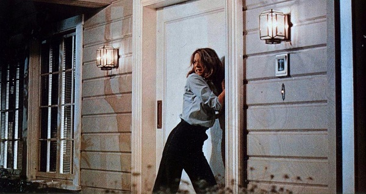
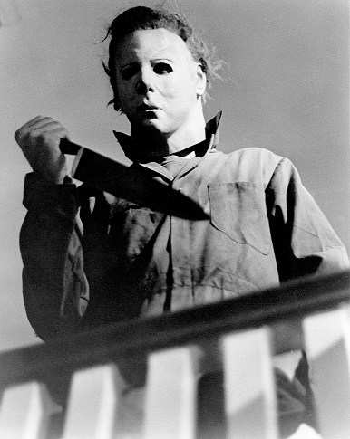

It would be silly to say all of this and not talk about my FAVORITE movie of all time. The movie that made me a fan and has kept me a fan for all these years. I instantly fell in love when I first saw John Carpenter’s Halloween from 1978. I saw Jamie Lee Curtis being chased by the Boogeyman, which resonated with me. Yes, part of us always wants to root for the villain, Michael Myers, but for me, JLC was a strong character who was able to fight to stay alive. She showed that women could be bad@$$! I have seen this movie more times than I could ever count, and it continues to be a comfort movie. My life goal and ultimate achievement would be to meet JLC and tell her how her character and portrayal of Laurie Strode affected my young mind and influenced me in my life. And yes, I still love and collect those old VHS tapes. Some things never go out of style!
On a cold Halloween night in 1963, six year old Michael Myers brutally murdered his 17-year-old sister, Judith. He was sentenced and locked away for 15 years. But on October 30, 1978, while being transferred for a court date, a 21-year-old Michael Myers steals a car and escapes Smith's Grove. He returns to his quiet hometown of Haddonfield, Illinois, where he looks for his next victims.
 